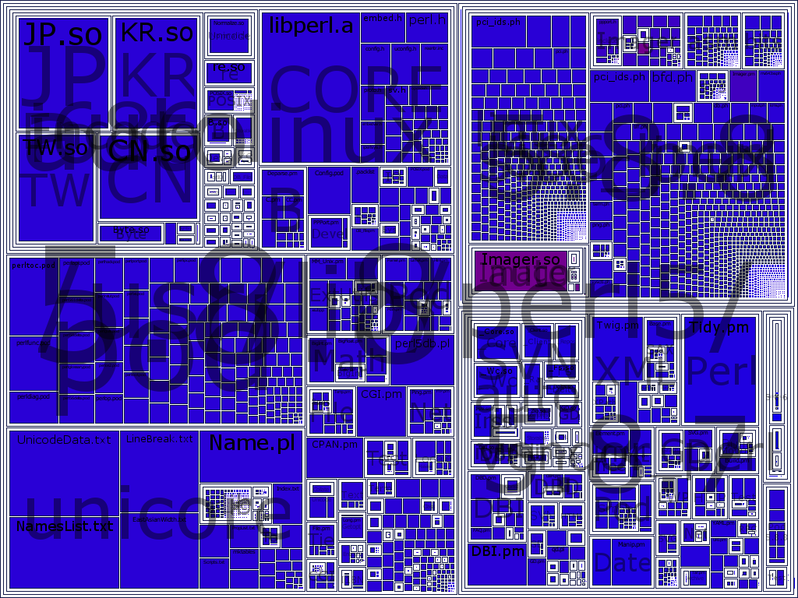
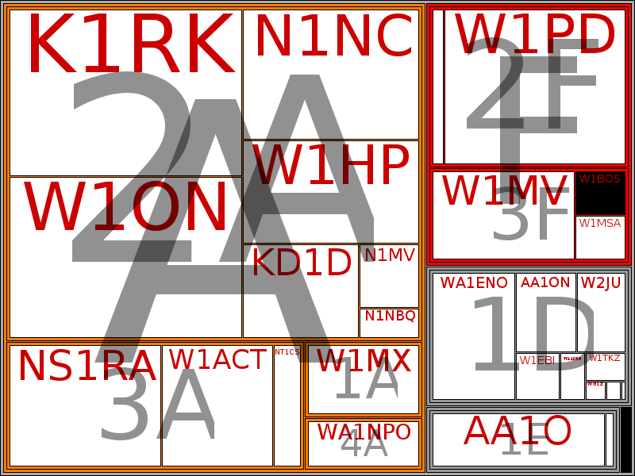

Treemaps have been around for over a decade. Ben Schneiderman, one of the great user-interface gurus, developed the first one to manage the disk space on his UMD server, and documents their evolution. They've since been adapted to network bandwidths, internet community mapping, stock markets (a Treemap combined with a Heatmap to show gain/loss), and contest scores, among other applications. Many programmers know there are commercial and free Java implementations, but may be unaware that CPAN has a module, Treemap, which implements several of the top variant algorithms in Perl, and uses the labeling format of the Internet community map. The following Treemap (created with the module's example Dir_Squarified_Imager) portrays my /usr/lib/perl/ file tree graphically, and yields a few (now) fairly obvious surprises that would be hard to find with ls.
$ perl examples/Dir_Squarified_Imager.t.pl lib_perl.png /usr/lib/perl5/ We can easily see that:
my system has been upgraded a few times, there are several version-specific 5.8.\d sub-dirs, with different contents;
The Imager package that I installed as a prerequisite for Treemap has a fairly big shared library (large purple block, middle right);
The Unicode core, and it's cousin Encode, are each bigger than the language's (libperl.a…)!
This is great for finding duplicate and surprisingly big packages and (when run via sudo) the biggest disk abusers. But can be used for so much more, and with Perl it's easy to hook it up to any datasource you like.
I happen to provide tehnical support for a .ORG website that produces some interesting numerical data ever year, so I decided to try using Treemap. It wasn't quite as easy as it looks, but I had some fun and made some nifty graphics. Some difficulties I encountered include:
It requires Imager as a prerequisite, which is a C-based extension to write PNG, GIF, etc. (Windows users should be able to get this from ActiveState or another PPM host.).
The documentation is thin, the examples work, if they're run from the right directory.
Inheritance from a baseclass is used, but three objects must be created and tied together. Notes seem to indicate a desire to someday handle the input and output sub-object creation by parameter, but for now must create a Treemap object with INPUT=> option of the Treemap::Input::XML or Treemap::Input::Dir object, and OUTPUT=>Treemap::Output::Imager. The sub-class of the main object determines the layout strategy - choice of three, Treemap::Simple, Treemap::Squarified, or Treemap::Strip. I eventually figured out from examples and the source which options apply to which object.
map is a poor sub name (in Treemap, overridden in Tm:Strip), as it overloads a builtin function with a method of same name. (The other subclasses override _map and _shrink instead.) Perl isn't confused, since methods and subs are called differently, but it will confuse syntax coloring editors and folks reading sources.
Treemap doesn't have <IMAGEMAP> support yet.
While XML is generic and Directories are the most common usage, if your data isn't on a WebService but rather a boring old database, a DBI or CSV input filter would be very useful.1 I had to decipher the desired XML structure to get XML::Simple to generate the desired XML and use Text::CSV pick my data as a pre-process. I should graft this into a Tree::Input::CSV module ...
The example scripts have just about everything hardcoded or defaulting. I made an extended version of the example script that uses Getopt::Long to let me try different cobinations of formatting options.
Using my modified canned example (below) we process the data like so:
$ for pn in ~/fd/FD_2006_*.xml
> do fn=${pn##*/}
> perl -I ../Treemap-0.2/ mod3.pl --padding=0 --spacing=1 \
> --fontdir=/usr/share/fonts/TTF --font=Vera $pn ${fn%%.*}.png
> echo $fn ${fn%%.*}.png done
> done
Loading /home/wdr/fd/FD_2006_ClassNatl.xml...
FD_2006_ClassNatl.xml FD_2006_ClassNatl.png done
Loading /home/wdr/fd/FD_2006_ClassSect.xml...
FD_2006_ClassSect.xml FD_2006_ClassSect.png done
Loading /home/wdr/fd/FD_2006_DivClass.xml...
FD_2006_DivClass.xml FD_2006_DivClass.png done
Loading /home/wdr/fd/FD_2006_Sections.xml...
FD_2006_Sections.xml FD_2006_Sections.png done
Loading /home/wdr/fd/FD_2006__EMA.xml...
FD_2006__EMA.xml FD_2006__EMA.png done

In case you're wondering, this is the scoring results from Amateur Radio Field Day, when ham radio stations around the country, many operating in the field, try to contact each other for fun, publicity, and points. The first image (inline) is the "zoom in" on just the Eastern Massachusetts Section (EMA). Since this one is small, it's XML dataset FD_2006__EMA.xml is also included.
The later (linked only) images cover the full US & even some "DX" (foreign, or Distance=DX) stations. The squares for the EMA stations in the first chart are colored blue (cyan); and I've used Yellow for other New England Division sections. Class A are Field Stations in public places on emergency power, with B Battery, C Car, D Domestic, E Emergency Power (Home), F Fire/CD/Emergency-Op-Center. The number before the class letter indicates the number of active transmitters, so 2A means a club in a public place with 2 transmitters.
Oh, and the funny letters like W1NVT are the callsigns of the club stations.
I also ran a mid-range zoom, restricting to just NE Division, in which I didn't bother to color the non-blue squares -- it consists only of the squares yellow and blue in the national charts. FD_2006_NED.png
The site for which I prepared of these charts has a fuller explanation of the charts and of the whole Field Day, and links to the parent organization for amateur radio concepts.
SYNOPSIS
$0 [args] [infile] [outfile]
Options:
-help brief help -ma full doc -verbose any trace capbabilites in script, maybe none -padding=5 interior space colored with parent node color; if 0, parent node colors vanish. -spacing=5 exterior space colored with background color; if 0, squares split only by bkgcolor line. -fontfile=../ImUgly.ttf A font to use, can be used instead of next two or default -font=arial name of font to use, use with ... -fontdir=/usr/share/fonts/corefonts where to find fonts (with above) -fontcolor='#RRGGBB' Font color in pseudo-html rgb numeric string COPYRIGHT
Copyright Bill Ricker 2006, based on Treemap examples. This program is free software, to be used under the same terms are Perl itself.
1 #!/usr/bin/perl -l 2 3 use strict; 4 use warnings; 5 6 use lib( ".." ); 7 use Treemap::Squarified; 8 use Treemap::Input::XML; 9 use Treemap::Output::Imager; 10 11 use Getopt::Long; 12 use Pod::Usage; 13 my ($verbose,$help, $man); 14 15 my ($padding, $spacing)=(5,5); 16 my ($fontdir, $font,$font_color)=(undef,'ImUgly','#000000'); ## 00=>Black 17 my $fontfile; 18 my $outfile; 19 my $outtype="png"; 20 my $infile; 21 my ($width,$height)=(800,600); # Fullscreen on small projector good default? 22 23 my $result = GetOptions ( 24 "padding=i" => \$padding, # numeric 25 "spacing=i" => \$spacing, # numeric 26 # "length=i" => \$length, # numeric 27 # "file=s" => \$data, # string 28 "infile=s" => \$infile, # string 29 "outfile=s" => \$outfile, # string 30 "outtype=s" => \$outfile, # string 31 "fontdir=s" => \$fontdir, # string 32 "font=s" => \$font, # string 33 "fontfile=s"=> \$fontfile, # string 34 "fontcolor=s"=>\$font_color, # string 36 37 "verbose|v|V"=>\$verbose, # flag 38 "help|h|?" =>\$help, 39 "man" =>\$man, 40 ) or pod2usage(2); 41 pod2usage(1) if $help; 42 pod2usage(-exitstatus => 0, -verbose => 2) if $man; 43 44 ### TBD - could add a couple more options ... 45 # BORDER_COLOUR MIN_FONT_SIZE TEXT_DEBUG DEBUG 46 ## Will also need to pass args to a CSV input parser ... 47 ## 48 49 50 # Default cascades 51 $infile ||= shift || "XML.xml"; 52 print "infile=>$infile" if $verbose; 53 54 $outfile ||= shift || "$infile.$outtype"; 55 print "outfile=>$outfile" if $verbose; 56 57 if ($font && ! $fontfile && ! $fontdir) 58 { 59 my @fonts = grep { -f $_} map {"$_/$font.ttf"} (glob('~/.fonts'),glob('~/.fonts/*'),glob('/usr/share/fonts/*')); 60 $fontfile = pop @fonts || (warn "No matching font in .font or /usr/share/fonts")&&''; 61 } 62 63 $fontfile ||= "$fontdir/$font.ttf" if $font && $fontdir; 64 $fontfile ||= '../ImUgly.ttf'; 65 print "font=>$fontfile" if $verbose; 66 67 print "$width x $height ($padding, $spacing)" if $verbose; 68 69 ## Input 70 # 71 my $input = new Treemap::Input::XML; ## @TBD -- suggested autoloading Input type, output type? 72 print "Loading $infile...\n"; 73 $input->load( $infile ); 74 75 ## Output 76 # 77 my $output = new Treemap::Output::Imager( WIDTH=>$width, HEIGHT=>$height, 78 FONT_FILE=>$fontfile, 79 FONT_COLOUR=>$font_color, 80 ); 81 82 ## Splice them together with Layout object 83 # 84 my $treemap = new Treemap::Squarified( INPUT=>$input, OUTPUT=>$output, 85 PADDING=>$padding, 86 SPACING=>$spacing, 87 ); 88 89 ## Do it 90 # 91 $treemap->map(); 92 $output->save($outfile);1. Shortly before going to press, I received word from the module author that another user had submitted a patch for DBI support. Until it propogates to CPAN you can nab the 0.04 treemap bundle with Treemap::Input:DBI from here
{kind=link}